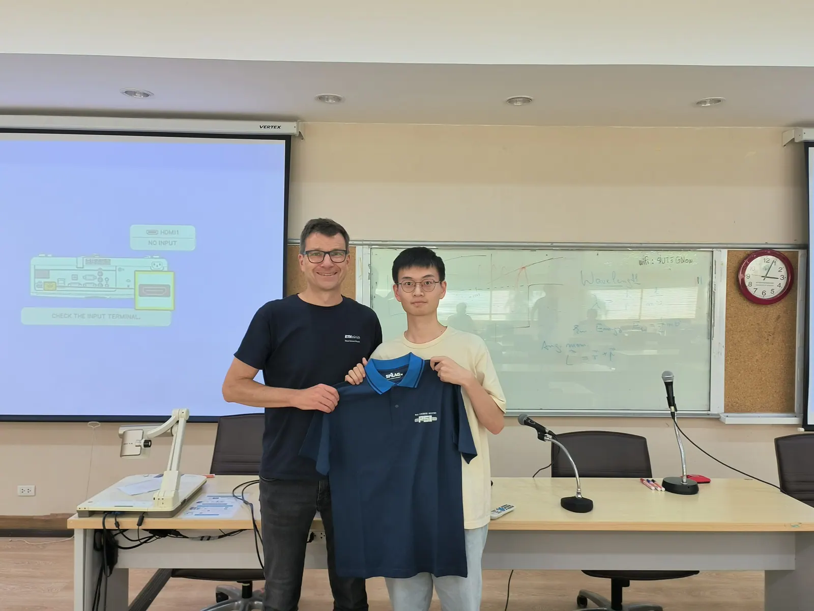
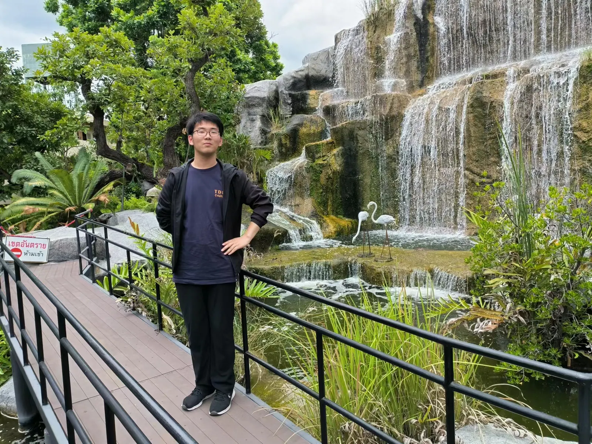
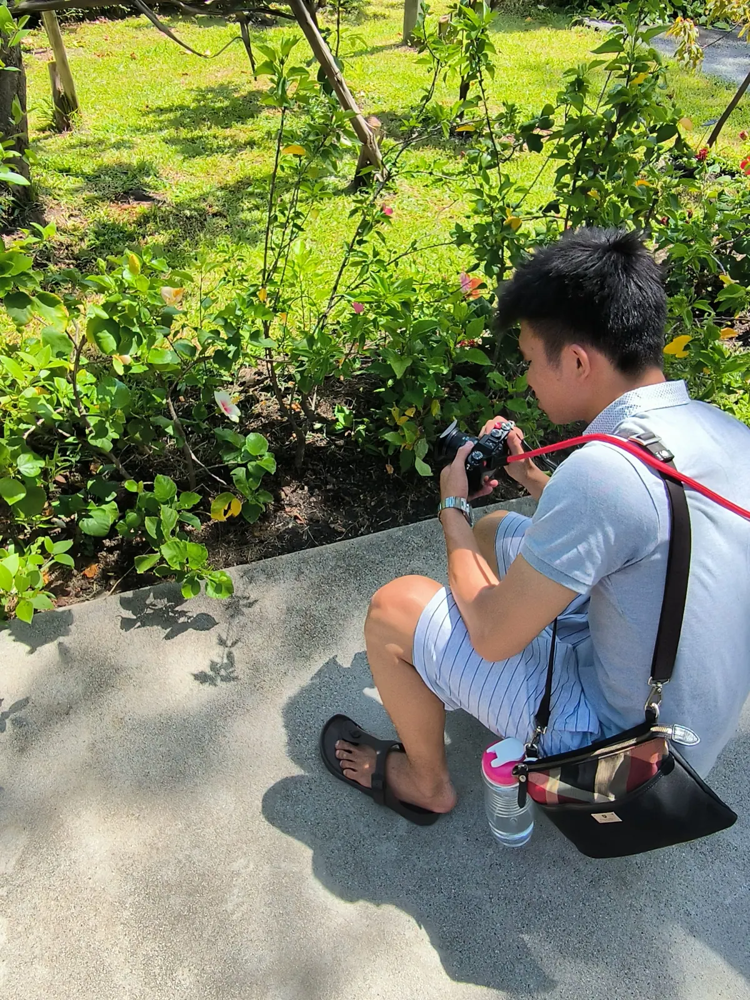
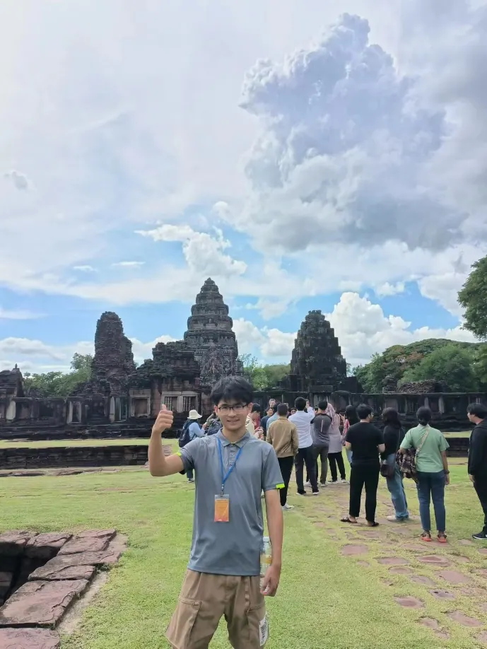

From July 10 to 14, our young research team had the privilege of attending the SUT-PSI School of Muon and Neutron Physics, hosted by Suranaree University of Technology (SUT) in Thailand. The well-curated curriculum blended theoretical and practical elements, designed to stimulate intellectual curiosity and deepen our understanding of low-energy particle physics.
The programme featured extensive lectures on the many roles of muons and neutrons in low-energy particle physics, along with hands-on tutorials on current practices in particle physics simulation and analysis. These were complemented by an eye-opening tour of the Synchrotron Light Research Institute, a centre of scientific progress and innovation in the region.
The academic programme was well balanced with cultural immersion and networking opportunities. A memorable visit to the Phimai Historical Park let us appreciate Thailand’s rich heritage, while lively discussions with fellow physicists encouraged the exchange of ideas and sparked new perspectives. Shared meals of Thai cuisine and social activities also fostered lasting connections with physicists from Thailand, Switzerland, Indonesia, and Malaysia. This blend of scholarly pursuits and cultural exploration greatly enriched our group’s collective experience and broadened our horizons.


“Under the guidance of Kim Siang, we traveled to Thailand to attend a summer school on muon and neutron physics, jointly organized by SUT and PSI. The school covered multiple aspects of muon and neutron physics, including fundamental concepts such as the muon g-2, muon EDM, neutron EDM, and others, as well as applied physics related to muons and neutrons. The lecturers delivered clear and instructive presentations, from which I learned a great deal. We also toured the Thai synchrotron national laboratory, where some very interesting research is being conducted based on the light source. I was impressed by the relaxed atmosphere and approachable lecturers. We thoroughly enjoyed the physics! Another highlight was viewing the Milky Way! It was a truly enjoyable trip that I greatly appreciated.” – Yonghao Zeng


“Attending the Neutron and Muon Physics Summer School in Thailand, organized by Suranaree University of Technology and the Paul Scherrer Institute, was an incredible experience. The school offered a deep dive into neutron and muon physics, fostering invaluable interactions with experts. Klaus’ insights on low-energy particle physics and muon experiments were impactful, as were presentations on ultracold neutrons and PSI beamlines. I benefited greatly from Andreas’ lecture on beam dynamics and Philip’s work on neutron and muon EDM measurements, while Yoshio’s entropy gravity theory and its neutron beam verification were fascinating. Narongrit’s session on particle physics experiments and muonic X-ray fundamentals was essential for understanding muon detection. My supervisor, Kim Siang, delivered a comprehensive review of muon g-2 and particle physics simulations, enriching my knowledge of simulation research. Beyond academics, I enjoyed engaging with international students, exploring the Suranaree University campus, and indulging in Thai cuisine, and I also appreciated the local traditions and lifestyle. My gratitude goes to everyone who made this enriching experience possible; it has reinforced my determination to delve deeper into muon and particle physics research.” – Jiangtao Wang


“UCNs, EDMs, muonic atoms, Siam Photon, Tomyam, and Jackie Cheung. The SUT-PSI School of Muon and Neutron Physics was an exquisite week filled with instructive lectures and tropical bliss. Passionate researchers from PSI gave insightful lectures on various topics at the low-energy physics frontier, covering in depth several experiments that use experimental finesse to probe new physics and applications. Each lecture concluded with engaging discussions that cleared up any lingering doubts among the students. The field visit to the Synchrotron Light Research Institute provided comprehensive clarity on the technical design and experimental set-up of a synchrotron facility. It also showcased Thailand’s exceptional effort in steering fundamental science research towards application fields, an inspirational model for ASEAN states to invest resources in fundamental scientific experiment facilities. The enlightening physics lectures were complemented with excursions to local historical sites, feasts of Thai delicacies, and karaoke sessions, facilitating a delightful exchange among participants. In brief, this school enriched my scientific pursuit and provided an overall enlightening experience.” – Guan Ming Wong


“I am deeply honored to have attended the Neutron and Muon Physics Summer School in Thailand, organized by Suranaree University of Technology (SUT) and the Paul Scherrer Institute (PSI). This enriching experience enhanced our understanding of neutron and muon physics and connected us with distinguished professors and experts. Highlights included Klaus’s overview of PSI’s low-energy particle physics research, Andreas’s explanation of PSI beamlines, and Philip’s fascinating presentation on neutron and muon EDM measurements. Yoshio’s insights into entropy gravity and Narongrit’s introduction to particle physics experiments offered valuable theoretical and practical perspectives. My supervisor, Kim Siang, provided a comprehensive overview of muon g-2 and particle physics simulations, deepening my understanding of these areas. The school offered a valuable cultural exchange, as we interacted with international students and experienced local Thai culture and cuisine. We were able to immerse ourselves in the local way of life, broadening our horizons significantly. In conclusion, the summer school was not just an academic experience, but also a cultural and personal journey that bolstered my determination to pursue muon and particle physics research. My deepest gratitude goes out to everyone who made this possible.” – Liang Wang


7月10日至14日，课题组的青年科研团队有幸参加了由泰国苏兰拉里理工大学（SUT）主办的SUT-PSI缪子与中子物理学校。课程设置精心，理论与实践相结合，旨在激发求知欲、加深我们对低能粒子物理的理解。
课程包括大量讲座，介绍缪子和中子在低能粒子物理中扮演的多重角色，并配有粒子物理模拟与分析现行方法的上机实践课程。此外，学员们还参观了该地区科学进步与创新的重镇——同步辐射光研究所，令人大开眼界。
学术活动之外，学校还安排了丰富的文化体验和交流机会。在披迈历史公园的参观令人难忘，让我们领略了泰国深厚的历史文化底蕴；与同行之间热烈的讨论促进了思想交流，激发了新的视角。共享泰式美食和各类社交活动，也让我们与来自泰国、瑞士、印度尼西亚和马来西亚的物理学者建立了长久的联系。学术探索与文化体验相结合，极大地丰富了课题组的共同经历，开阔了大家的视野。
“在许金祥老师的带领下，我们前往泰国参加由SUT和PSI联合举办的缪子与中子物理暑期学校。课程涵盖缪子和中子物理的多个方面，既包括缪子g-2、缪子电偶极矩、中子电偶极矩等基础概念，也包括与缪子和中子相关的应用物理。讲师们的报告清晰而富有启发性，我从中学到了很多。我们还参观了泰国同步辐射国家实验室，那里正基于光源开展一些非常有趣的研究。轻松的氛围和平易近人的讲师给我留下了深刻印象。我们尽情享受了物理的乐趣！另一大亮点是观赏银河！这是一次非常愉快、令我十分珍惜的旅程。”——曾永浩
“参加由苏兰拉里理工大学和保罗谢勒研究所在泰国联合举办的中子与缪子物理暑期学校，是一次难得的经历。学校深入介绍了中子与缪子物理，让我与专家们进行了宝贵的交流。Klaus关于低能粒子物理和缪子实验的见解令人印象深刻，关于超冷中子和PSI束线的报告同样精彩。Andreas关于束流动力学的讲座和Philip关于中子与缪子电偶极矩测量的工作让我受益匪浅，Yoshio的熵引力理论及其中子束检验也十分引人入胜。Narongrit关于粒子物理实验和缪子X射线基础的课程，对理解缪子探测至关重要。我的导师许金祥老师全面回顾了缪子g-2和粒子物理模拟，丰富了我在模拟研究方面的知识。学术之外，我很享受与各国学生的交流，漫步苏兰拉里理工大学校园，品尝泰国美食，也领略了当地的传统和生活方式。衷心感谢所有让这次充实经历成为可能的人；它坚定了我深入开展缪子与粒子物理研究的决心。”——王江涛
“超冷中子、电偶极矩、缪子原子、Siam Photon、冬阴功，还有Jackie Cheung。SUT-PSI缪子与中子物理学校是充满启发性讲座与热带惬意的美妙一周。来自PSI、充满热情的研究人员围绕低能物理前沿的多个主题作了深刻的讲座，深入介绍了若干凭借精湛实验技巧探索新物理及其应用的实验。每场讲座后都有热烈的讨论，解答了学生们心中残留的疑问。对同步辐射光研究所的实地参观，让我们对同步辐射装置的技术设计和实验布局有了全面清晰的认识。它也展示了泰国在推动基础科学研究走向应用领域方面的卓越努力，为东盟国家投资建设基础科学实验装置树立了鼓舞人心的榜样。精彩的物理讲座之外，还有参观当地历史遗迹、品尝泰式美食和卡拉OK等活动，促进了学员之间愉快的交流。总之，这次学校丰富了我的科学追求，带给我全方位的启迪。”——黄冠铭
“我非常荣幸能参加由苏兰拉里理工大学（SUT）和保罗谢勒研究所（PSI）在泰国联合举办的中子与缪子物理暑期学校。这次充实的经历加深了我们对中子与缪子物理的理解，也让我们结识了多位杰出的教授和专家。其中的亮点包括Klaus对PSI低能粒子物理研究的概述、Andreas对PSI束线的讲解，以及Philip关于中子与缪子电偶极矩测量的精彩报告。Yoshio关于熵引力的见解和Narongrit对粒子物理实验的介绍，提供了宝贵的理论与实践视角。我的导师许金祥老师全面介绍了缪子g-2和粒子物理模拟，加深了我对这些领域的理解。学校还提供了宝贵的文化交流机会，我们与各国学生互动，体验了当地的泰国文化和美食。我们得以融入当地的生活方式，极大地开阔了视野。总之，这次暑期学校不仅是一次学术经历，更是一段文化与个人成长之旅，坚定了我从事缪子与粒子物理研究的决心。衷心感谢所有让这一切成为可能的人。”——王量